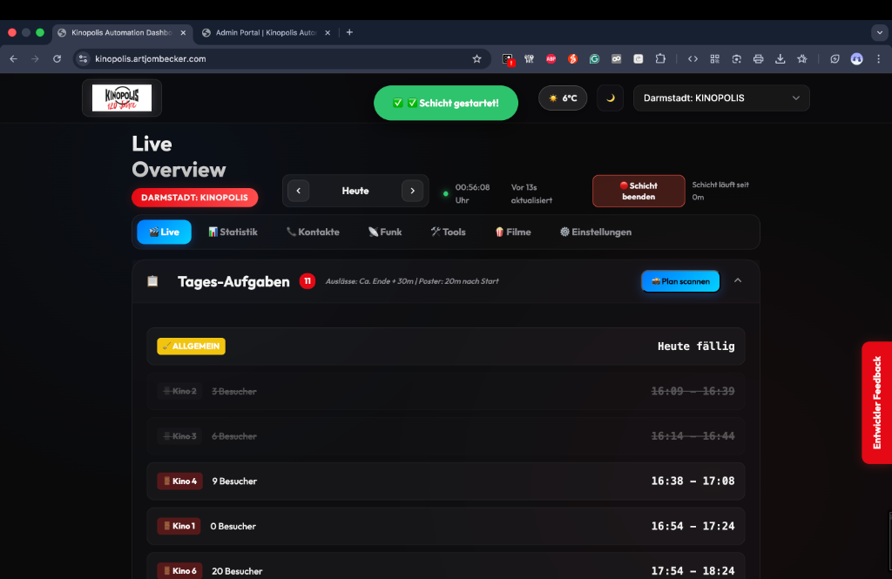
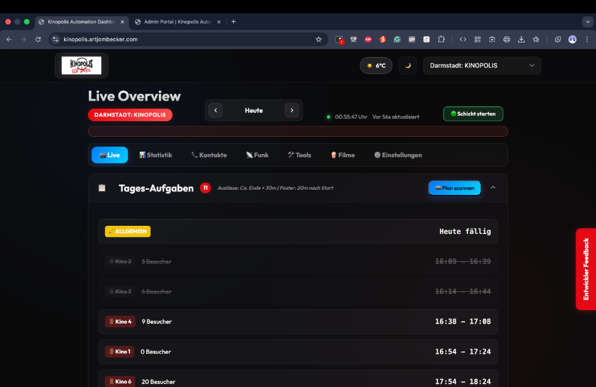
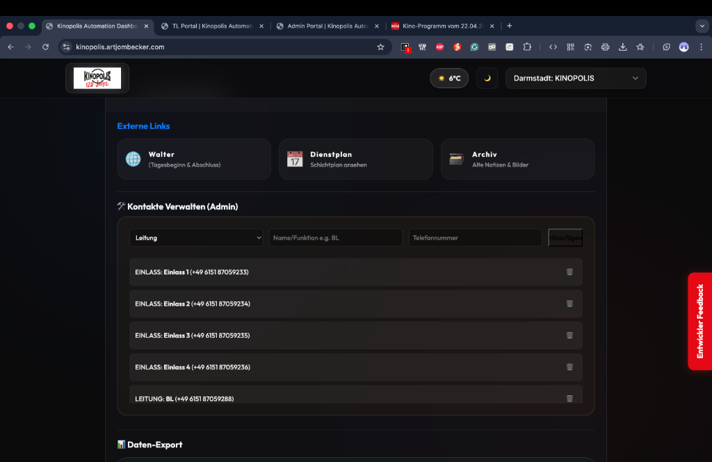
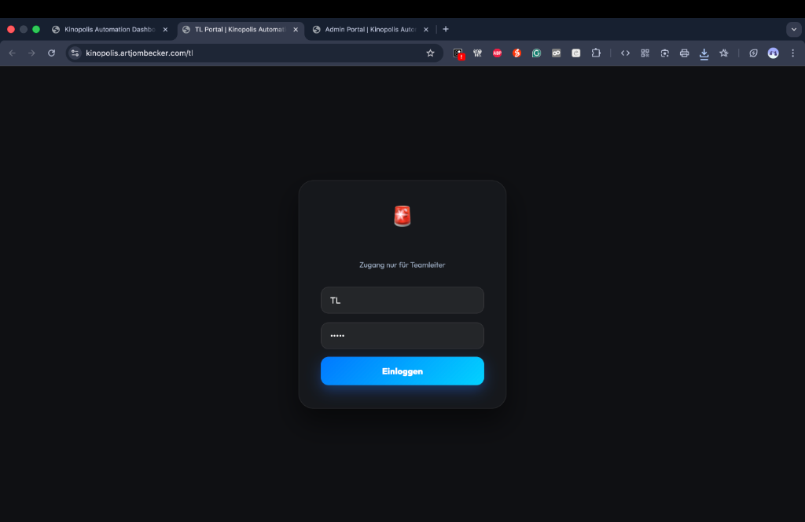
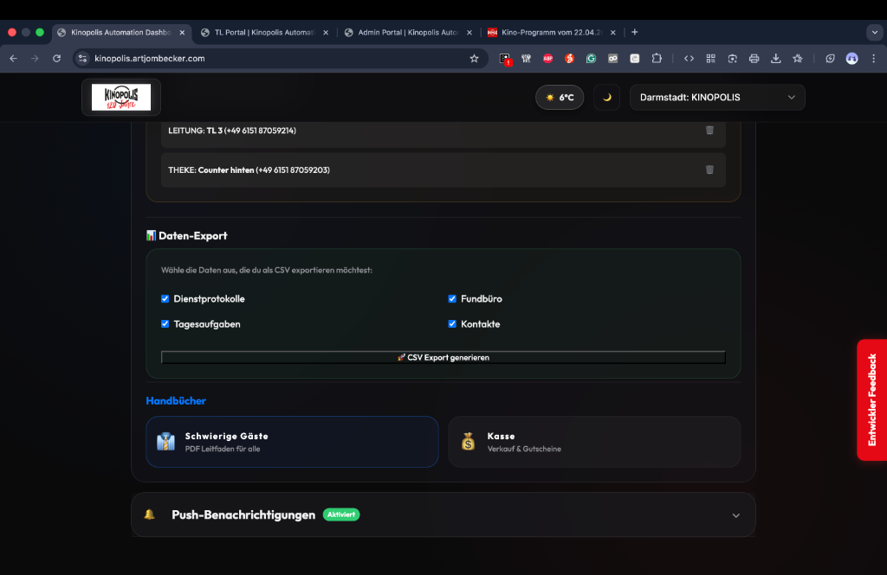
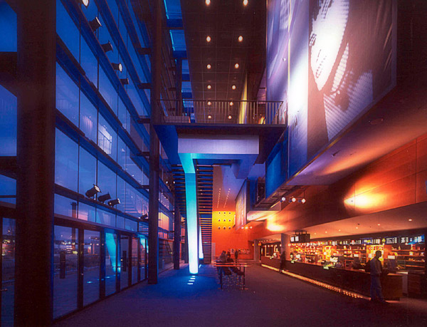
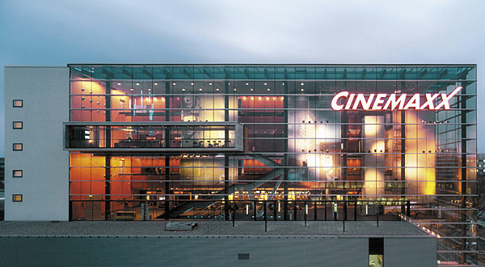

CinemaxX Darmstadt Archiv
Der Darmstädter „Kino-Krieg“ – Ein Rückblick
Vor genau 25 Jahren stand Darmstadt im Zeichen eines architektonischen und wirtschaftlichen Zweikampfs: Zwei Kino-Giganten kämpften um den besten Platz am Hauptbahnhof. Während die Theile-Gruppe (heute Kinopolis) ursprünglich auf der Westseite bauen wollte, sicherte sich die Hamburger CinemaxX-Gruppe von Hans-Joachim Flebbe den Standort auf der Ostseite – direkt über der Darmstädter Brauerei.
— Klaus Staat, ehem. ECHO-Lokalredaktion
Das Gebäude war eine immobilientechnische Sensation: Der Brauerei-Besitzer Wolfgang Koehler verkaufte dabei lediglich den Luftraum über seinem Betrieb. So entstand das Kino mit seinen acht Sälen direkt über dem Braukeller, der Abfüllanlage und dem Ladehof. Die charakteristische, 26 Meter hohe Glasfassade sorgt bis heute für die spektakuläre Optik des Gebäudes.
Die Eröffnung am 10. Februar 2000 wurde mit Uwe Ochsenknecht und 460 Ehrengästen gefeiert, die alle einen neun Zentimeter großen „Marzipan-Oscar“ erhielten. Doch der Start verlief holprig: Die Soundsysteme waren so brillant, dass Wassertropfen wie Dynamit klangen, und die ersten Leinwände zeigten Köpfe „im Format von Lastwagen“.
Quelle: Echo Online - "Was es mit dem Darmstädter Kino-Krieg auf sich hatte"Bildergalerie: Bau & Eröffnung
Historische Aufnahmen aus der Echo-Chronik und privaten Sammlungen.









